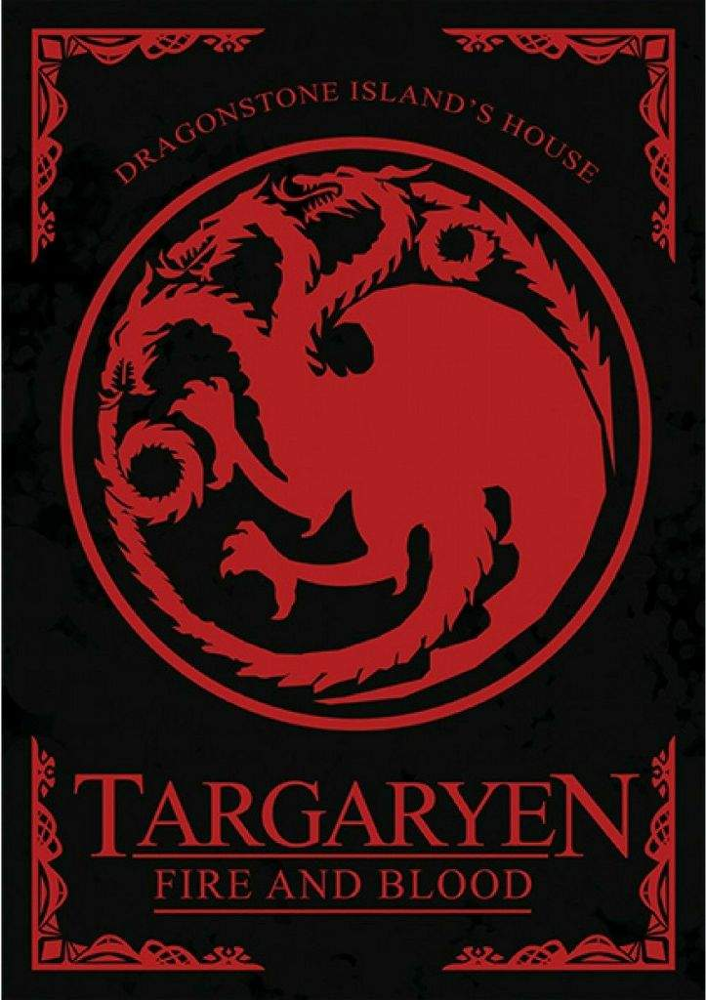
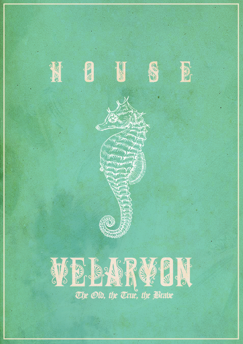
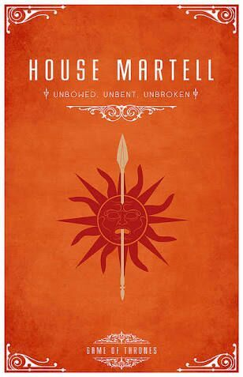
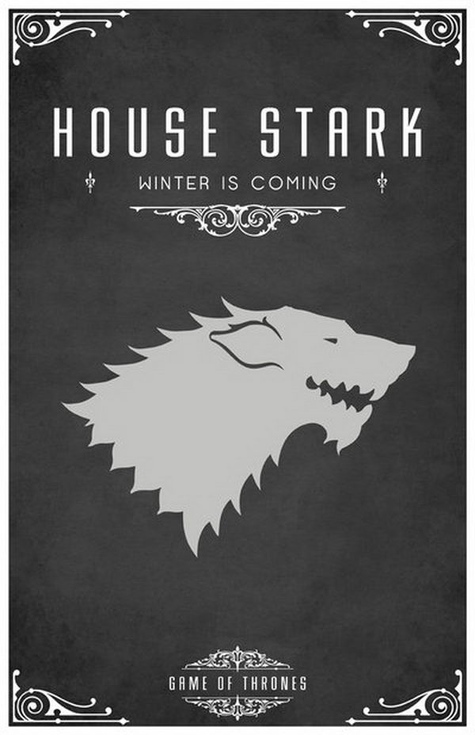
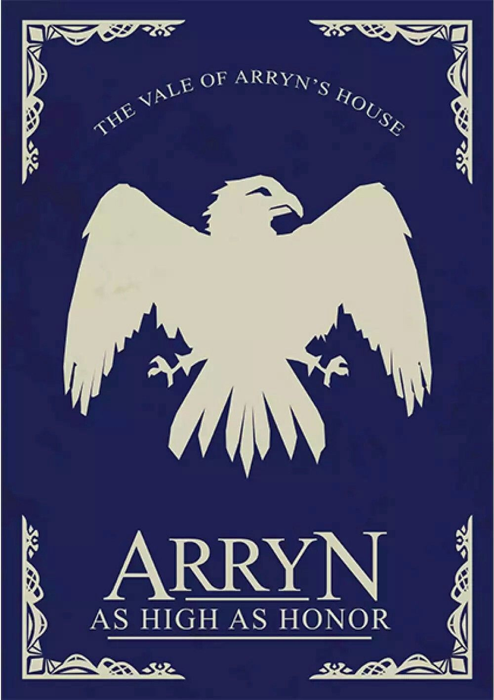

Nome:Augusto Avozani Albrecht
Turma:EMI Informática I
Instituto Federal Campus Erechim
Se quiser ouvir a música Jenny of Oldstones de Florence + the Machine, clique no play. Essa música foi feita para a última temporade de Game of Thrones
| Targaryen |  |
|---|---|
| Velaryon |  |
| Martell |  |
| Stark |  |
| Arryn |  |
| Conteúdo | Casa Correspondente | Nível de Dificuldade |
|---|---|---|
| Logaritmos | Targaryen | Facilidade |
| Função Exponencial | Velaryon | Média Facilidade |
| Função Modular | Martell | Média Dificuldade |
| Função Quadrática | Stark | Difícil |
| Auto Avaliação | Arryn | Auto Avaliação |
Esse é meu segundo portfólio, devo dizer que adorei a experiência de fazer o primeiro e agora de fazer o segundo. O primeiro portfólio fiz com o tema das quatro estações e este é sobre as Crônicas de Gelo e Fogo. O portfólio em questão é uma grande revisão de todos os conteúdos de matemática abordados o trimestre além do mais posso exercitar minhas poucas habilidades em HTML, como já mecionado fiz baseado nas Crônicas de Gelo e Fogo de George R. Martin e cada casa de Westeros, usei as que mais gosto que são: Targaryen, Velaryon, Martell e Stark. Recomendo demais, passo mal de tanta euforia ao assistir, poder feminino reina o final nós fingimos que não aconteceu. #AmoPortfólios
O Vídeo acima faz uma introdução ao universo de Gelo e Fogo